grafikcem@github ~ $ whoamigrafikcem@github ~ $ ./contributions.sh
grafikcem@github ~ $ cat README.txtI'm a graphic designer from İstanbul. I put AI tools into my own design work and share what holds up — and where it doesn't.
Tasarımcıyım. Yapay zekâyı kendi işimde deniyor, sonucu sınırlarıyla birlikte gösteriyorum.
grafikcem.com · YouTube · Instagram · X